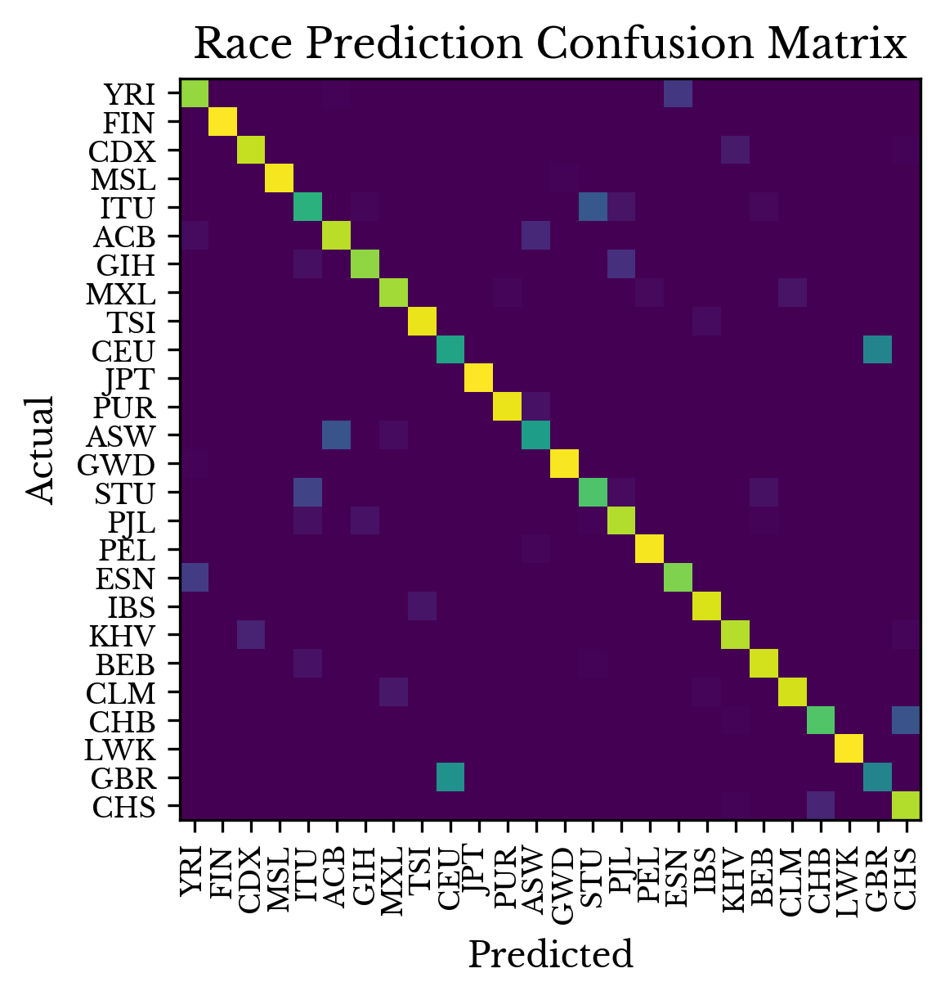
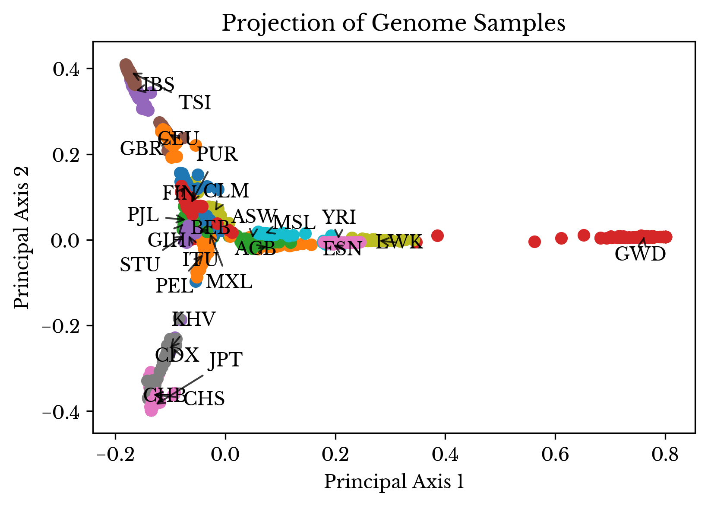

Ancestry Determination via Genetic Variant Analysis
Sat, 18 Apr 2020
Ancestry, Bioinformatics, Data Science, Genome Sequencing, Medicine, Snp, Statistics
Introduction
Sequencing of the human genome began in 1990 as part of the Human Genome Project. With the technology available at the time, the project was a substantial undertaking. The human genome contains two sets of 23 chromosomes each with roughly 3.2 billion base pairs. A number of institutions, in countries around the world, participated in the project. Thirteen years later the project was complete at a cost of roughly three billion US dollars. The result was the first reference human genome.
Rapid advances in the field of genomics have dramatically lowered the cost of genetic sequencing and have ushered in the age of the once fabled "$1000 genome." Now, a growing list of companies offer whole genome sequencing for hundreds of dollars with turn around time measured in weeks. This technology enables introspection into the sequences of nucleobases that comprise DNA and thus the genes of anyone curious enough to take the plunge.
Genetic Sequencing
With a reference human genome in place, one motivation for performing genome sequencing on a subject is to identify differences between the DNA of the subject and that of the reference. In this way, differences corresponding to genetic characteristics, diseases, or risk factors can be identified.
First, the sequencing data from the subject is aligned to the reference genome. This computationally intensive process involves aligning matching portions of the sample genome to the reference. Once alignment is complete, the
i-th base pair in a given reference sequence corresponds to the
i-th base pair in the corresponding sequence in the other genome. Alignment allows for more easy comparison of the sample to the reference.
Next, the two aligned genomes are compared. There are a variety of ways in which these two sequences of DNA can differ. Bases can be inserted, deleted, or replaced resulting in different types of variants. Several online resources catalogue known variants according to their ID. Many variants have no known clinical significance, however a growing number have been shown to be important in genetic traits, diseases, and predispositions [3].
The Dataset
The International Genome Sample Resource (IGSR) provides a collection of several thousand genomes in various file formats [1]. In addition to the full sequencing data, the project also provides files encoding the genetic variants each of the subjects possess. Variant call format (VCF) files are used to store information about these genetic variants. An example of several rows from a VCF file are shown in Detail 1.
#CHROM POS ID REF ALT QUAL FILTER INFO FORMAT Sample001
20 14370 rs6054257 G A 29 PASS DP=14;AF=0.5;DB GT:DP 0/1:1
20 17330 . T A 3 q10 DP=11;AF=0.017 GT:DP 1/1:3
Detail 1: The VCF File Format
The first row of the file contains the column names while the next two rows contain information about two genetic variants. Both variants occur in chromosome 20 with one at position 14370 and one at 17330. The first variant has ID
rs6054257, while the second has no ID assigned to it. The file contains information for a single sample:
Sample001.
In addition to the sequencing data, the IGSR also has information about the gender and ethnic origins of each subject [1]. This data is employed later to construct a mathematical model.
Data Setup
Scikit-allel is used to read the VCF file into memory [2]. The data in the VCF file is loaded into a three-dimensional array where each row corresponds to a variant, each column corresponds to a subject, and the third axis corresponds to ploidy. Since human cells are diploid, the third axis has a length of two.
[[[0, 1]],
[[1, 1]]]
Detail 2: The Loaded VCF Genotype Array
Each element in this array is the ID of the allele with 0 being the reference allele ID. This third axis is aggregated by counting the number of non-reference alleles in both pairs of chromosomes. Thus, each element in the reduced matrix is in the set \(\{0, 1, 2\}\). Missing allele cells are assumed to match the reference; they are treated as zero.
Now, a new matrix \(\mathbf{A}\) is constructed where every row of the matrix corresponds to a subject and every column corresponds to a variant ID. Due to the number of variants possible, a list of common variants is obtained from the NBHI and this list is further reduced using random sampling and feature selection. Each cell \(\mathbf{A}_{ij}\) of the matrix contains the number of copies of the
j-th variant, regardless of allele ID, that sample
i possesses. With this arrangement, humans, being diploid, can have a maximum value of two for any cell.
Transformation
The high dimensional sparse encoding matrix is transformed to a reduced dense matrix using the truncated singular value decomposition algorithm. Using the singular vectors, the data is projected onto a lower dimensional subspace that preserves a large amount of the information content found in the original matrix. Several features are added including the total number of variants, the total number of heterozygous variants, and the total number of homozygous variants.
Next, a 26-class classification problem is constructed. A random forest classifier is constructed that attempts to predict the race of the subject given its dense feature vector. Thus, the classifier attempts to predict the race of a subject given information about the genetic variants the subject possesses.
Results
Next, the performance of the model is estimated. Due to the small number of samples in the dataset, leave-one-out cross-validation is employed to evaluate the performance of the model. Table 1 lists the training and validation performance results as well as the number of nodes in the random forest.
| Field | Value |
|---|
| Train Accuracy | 98.52% |
| Test Accuracy | 85.94% |
| Node Count | 5974 |
Table 1: Model Evaluation Results
Both training score and node count are derived from a model trained on all samples while the validation score is the average of all leave-one-out validation runs. Given the number and granularity of the classes, the discrete accuracy measure is quite an unforgiving measure of model performance. Despite this, the model still performs ably.
Figure 1 shows the confusion matrix for the model created using by combining the results of the validation runs. The color of the cell in row
i and column
j is the percentage of samples of class
i predicted to be of class
j.

Figure 1: Model Confusion Matrix
As can be seen, the mistakes made by the model are frequently between two races that are more genetically similar. For example, the model makes several mistakes in differentiating Han Chinese in southern China from Han Chinese in northern China and in differentiating residents of the US from residents of the UK.
Finally, the model is evaluated by viewing a low dimensional projection of the class probabilities. Principal component analysis is performed on the 26 column matrix containing the predicted class probabilities. The two largest components are preserved so that a two-dimensional projection is obtained.

Figure 2: Projected Model Class Prediction Scores
The spatial relationships among the projected samples corroborate the positive results of the model. In the plot, races that are intuitively more genetically similar to each other are located closer together. Table 2 provides the definitions for each of the annotations, taken from the IGSR website [1].
| Label | Count | Description |
|---|
| GBR | 91 | British in England and Scotland |
| FIN | 99 | Finnish in Finland |
| CHS | 105 | Southern Han Chinese, China |
| PUR | 104 | Puerto Rican in Puerto Rico |
| CDX | 93 | Chinese Dai in Xishuangbanna, China |
| CLM | 94 | Colombian in Medellin, Colombia |
| IBS | 107 | Iberian populations in Spain |
| PEL | 85 | Peruvian in Lima, Peru |
| PJL | 96 | Punjabi in Lahore, Pakistan |
| KHV | 99 | Kinh in Ho Chi Minh City, Vietnam |
| ACB | 96 | African Caribbean in Barbados |
| GWD | 113 | Gambian in Western Division, The Gambia |
| ESN | 99 | Esan in Nigeria |
| BEB | 86 | Bengali in Bangladesh |
| MSL | 85 | Mende in Sierra Leone |
| STU | 102 | Sri Lankan Tamil in the UK |
| ITU | 102 | Indian Telugu in the UK |
| CEU | 99 | Utah residents of Northern & Western European ancestry |
| YRI | 108 | Yoruba in Ibadan, Nigeria |
| CHB | 103 | Han Chinese in Bejing, China |
| JPT | 104 | Japanese in Tokyo, Japan |
| LWK | 99 | Luhya in Webuye, Kenya |
| ASW | 61 | African Ancestry in Southwest US |
| MXL | 64 | Mexican Ancestry in Los Angeles, California |
| TSI | 107 | Toscani in Italy |
| GIH | 103 | Gujarati Indian in Houston,TX |
Table 2: Annotation Label Definitions
Asians form a cluster near the bottom left of the graph. Those of African descent form a long arm off to the right. The third arm stretching off to the top left contains mostly subjects of northern and western European ancestry.
Conclusion
In the modern era, genetic sequencing is faster and cheaper than ever. A number of companies offers genetic sequencing services that look for known genetic variants. Further, a number of these companies provide access to raw VCF files. This post shows that VCF files can be used to construct a model that accurately predicts ethnic background. Empirical results suggest that this model is reasonably accurate and captures meaningful variance within the data.
References
[1] https://www.internationalgenome.org/
[2] https://scikit-allel.readthedocs.io/en/stable/
[3] https://www.snpedia.com/
{kind=link}
{kind=link}